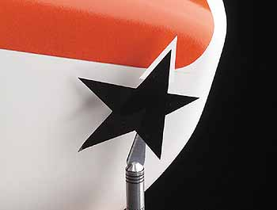

| Все статьи |
Spray-Can Painting Made Easy A simple technique for super results | ||||
| |||||
Mask
the rest of the cowl with paper masking tape. Begin along the electrical
tape, and work away from the paint edge until you have about 2 inches
of masked area.
Маскируйте остальную часть капота бумажной маскирующей лентой. Начните вдоль изоленты и двигайтесь от границы покраски пока не пройдете около 2 дюймов (5 см)
Use paper to mask the rest of the cowl, and make sure everything is completely
covered. Use your thumbnail to burnish the electrical tape down tightly.
Double-check the curved edges to make certain the tape hasn't lifted out
of place.
Используйте бумагу, чтобы маскировать остальную часть капота и убедитесь, что всё полностью закрыто. Большим пальцем плотно прижмите изоленту. Тщательно проверьте криволинейные поверхности и убедитесь, что лента не отошла от поверхности.
Above left: cover your work surface with paper, and prop up the
cowl with a couple of paper cups to lift it from the bench. This will
prevent the paint from "gluing" the part to the paper and marring the
finish. Now apply the trim color to the unmasked portion of the cowl.
Apply the paint in very light mist coats, and allow it to dry for a minute
or two before you apply more paint.
Сверху слева: накройте вашу рабочую поверхность бумагой и подоприте
капот парой бумажных стаканчиков для того, чтобы приподнять его над столом. Это
предотвратит приклеивание детали к бумаге и повреждение отделки.
Center: here, you see the first mist coat. Note that it does not
completely cover the white base coat. Apply several more light coats until
the white is no longer visible.
В центре: здесь вы видите первый туманный слой. Обратите внимание, слой не полностью
покрывает белый базовый слой. Наложите несколько легких слоев до полного закрытия белого.
Above right: this is what the red looks like after six or seven
mist coats have been applied. Now let the paint set for about 10 minutes,
then carefully remove your masking tape.
Сверху справа: Вот как выглядит красный после наложения шести или семи легких слоев. Теперь
дайте краске схватиться в течение примерно 10 минут и затем осторожно удалите маскирующую ленту.

After
the paint has dried overnight, apply your trim graphics. Here, I am applying
the black star to the cowl. Note the small triangle of white I added to
the top point of the star. This little trick makes it unnecessary to mask
off the red portion where the star would rest.
После просушки краски в течение ночи, наложите вашу аппликацию. Здесь я использую черную звезду. Обратите внимание на маленький белый треугольник, который я добавил к верхнему лучу звезды. Этот небольшой трюк позволяет избежать маскирования части красного в том месте, где проходит верхний луч.
Here,
I am applying the two black pinstripes that finish the trim design. Once
you have finished with all the trim work, wipe the cowl with a tack cloth
and hang it on the wire hanger again and apply several light clear coats
to seal everything into place. Allow the clear coat to dry overnight,
and you'll be ready to attach the cowl to your model.
Я наклеиваю две черные полосы для завершения цветовой отделки. Закончив с отделкой протрите капот ветошью
и снова подвесте его на проволочной вешалке. Покройте все несколькими слоями прозрачного лака чтобы запечатать
все что есть. Пусть просохнет в течение ночи и теперь вы готовы к установке капота на вашу модель.
Here is the finished
cowl on the Super Decathlon. Painting with spray cans is very easy, and
the results are impressive if you take the time to do the job right. A
clear coat really makes the finish shine and seals all the trim edges
at the same time. Give it a try; you'll love the results.
Вот законченный вид Super Decathlon. Покраска из баллончика может быть очень простой, а результаты впечатляющими
если вы дадите себе труд сделать все правильно. Прозрачный лак действительно заставляет краску сиять и в то же
время запечатывает грани аппликаций.
| 1 • 2 • 3 |